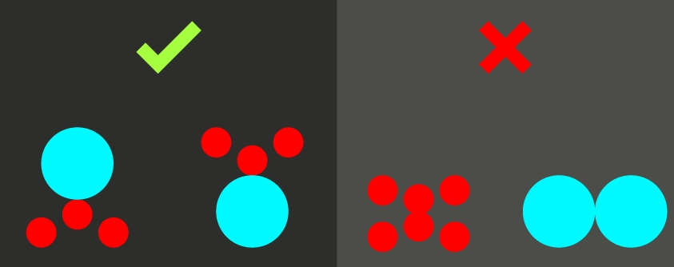

O balanço é um conceito mais subjetivo do que objetivo e descreve o peso que um objeto pode ter em cena, isso fica a critério da sensibilidade do designer no momento da criação, perceber quais objetos estão pesando mais em sua arte e saber distribuí-los. Essa distribuição pode ser simétrica ou assimétrica, de forma que um elemento pesado pode combinar com outro, ou combinar com elementos mais leves ao seu entorno.
